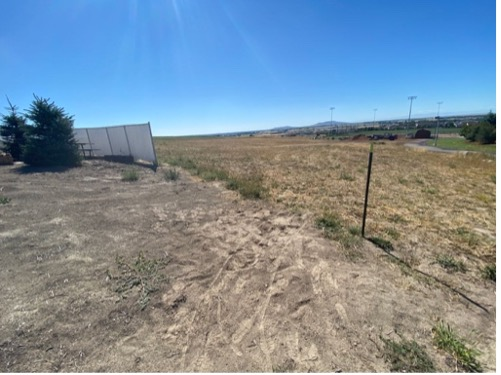
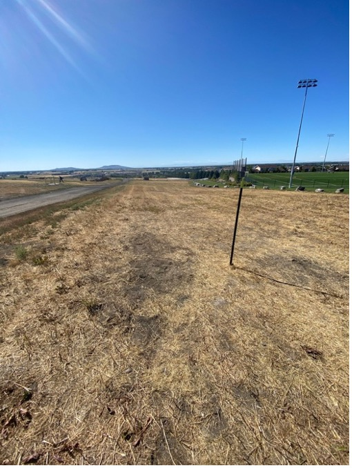
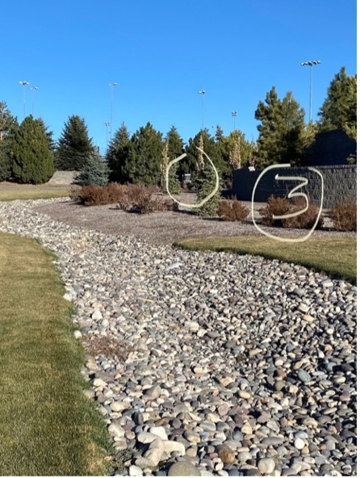
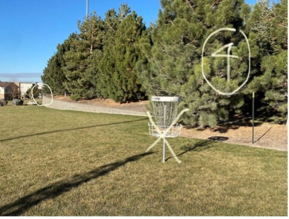
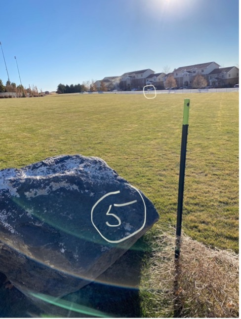
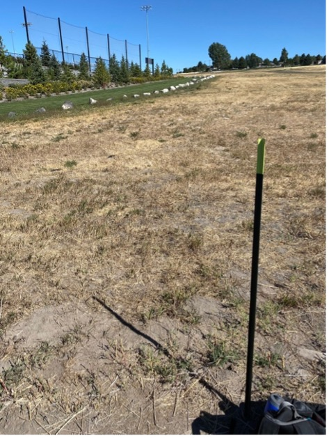
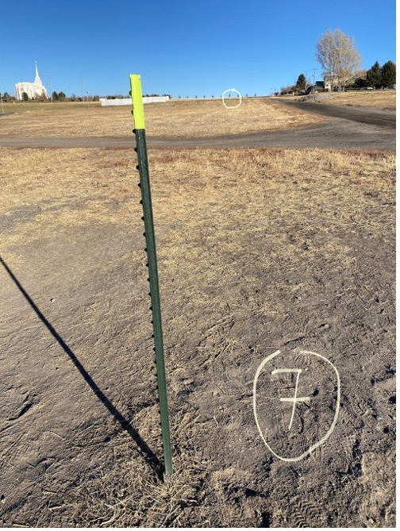
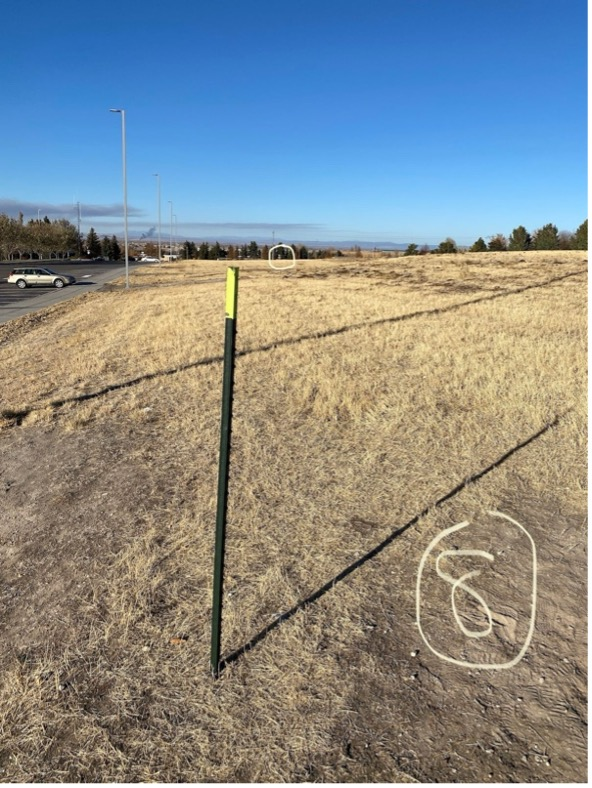

Course Holes
Explore all 9 holes of our disc golf course. Each hole offers a unique challenge with varying distances, pars, and obstacles.

Par 3
Clear shot downhill. Careful not to overthrow this one into the mud volleyball pit.
Distance: 288ft

Par 4
Long shot that bends around the soccer field. Be careful not to go to the right or you will have to walk all the way around the fence to retrieve your disc.
Distance: 612ft

Par 4
Medium distance with a sharp right turn at the end. Lots of bushes and trees in the out of bounds to the right, rock river hazard running through the middle. Great hole for a lefty or a good forehand through.
Distance: 465ft

Par 3
Short hole with a slight right bend, great birdie opportunity with a midrange disc. Be careful not to go into the trees. Another left hander shot.
Distance: 229ft

Par 3
Clear open shot in the middle of a flat grassy field. All you have to do is throw it straight and try not to overthrow it. Another great opportunity for a birdie.
Distance: 226ft

Par 3
This is a tricky shot to stay in bounds. You have a thin strip of grass that is in bounds and it is on the perfect flight path for a right handed back hand throw. It is a steeper incline than it looks and there are thick bushes on the left that have eaten more than one disc.
Distance: 349ft

Par 4
Wide open straight shot, but it is uphill and hard to get it to glide very far. Don't throw it too high or too low. Throw it straight and it is not a difficult par 4.
Distance: 420ft

Par 4
This is a fun hole. It is a little long, but it is down hill and you can really get some glide time. I have my longest throw on this hole. Keep it straight and you have a great opportunity for a birdie.
Distance: 514ft

Par 4
Coming right back up hill from hole 8, this one is a wide open shot. Keep it straight and it is an easy par. Trees on the left are not too bad, but they can block your approach on your second shot, so keep right.
Distance: 400ft